Torque, represented by \( \vec{\tau} \), is a central concept in rotational
mechanics,
illustrating the twisting effect produced by a force applied at a distance from a
fixed point or
axis. The concept can be understood well through everyday actions such as opening a
door or
unscrewing a bottle cap—where a force is applied at a distance from its axis of
rotation,
thereby generating a torque.
The amount of torque generated depends on the force applied, the distance from the
axis of
rotation, and the direction of application of force. A mathematical formulation of
torque can be
done by understanding first the torque about an axis and then torque about a point.
This is done
in the following sections:
Consider a rigid body free to rotate about an axis of rotation. If a force acts
on the body, the force may cause a torque, which tends to rotate the body about
the axis. For simplicity, this explanation assumes that the force acts in a
plane perpendicular to the axis of rotation. The direction of the torque
generated by the force is calculated using the right-hand thumb rule.
This concept is depicted in the following diagrams:
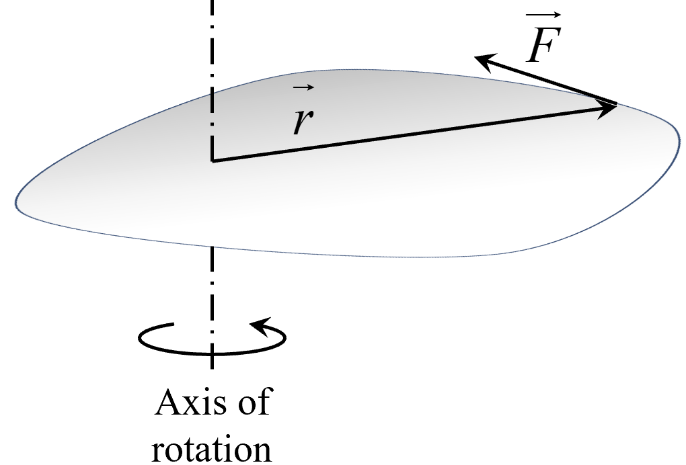
Diagram: Force generating a torque.
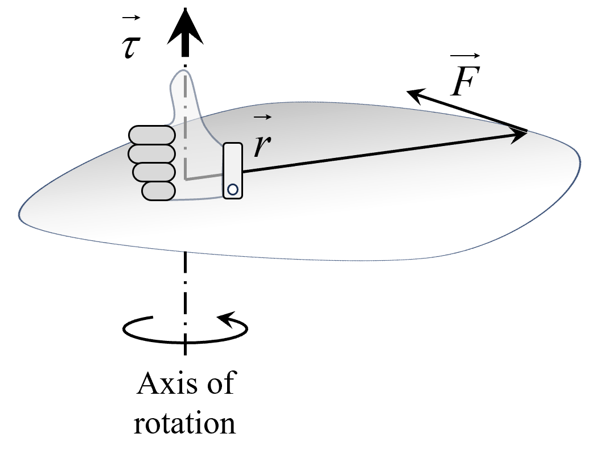
Diagram: Direction of torque.
Consider the top view of the above diagram, such that the axis of rotation
appears as a point. We examine a plane perpendicular to the axis of rotation
that contains point \( P \), where the force is applied. The position vector \(
\vec{r} \), from the axis to the point where the force is applied, is clearly
visible.
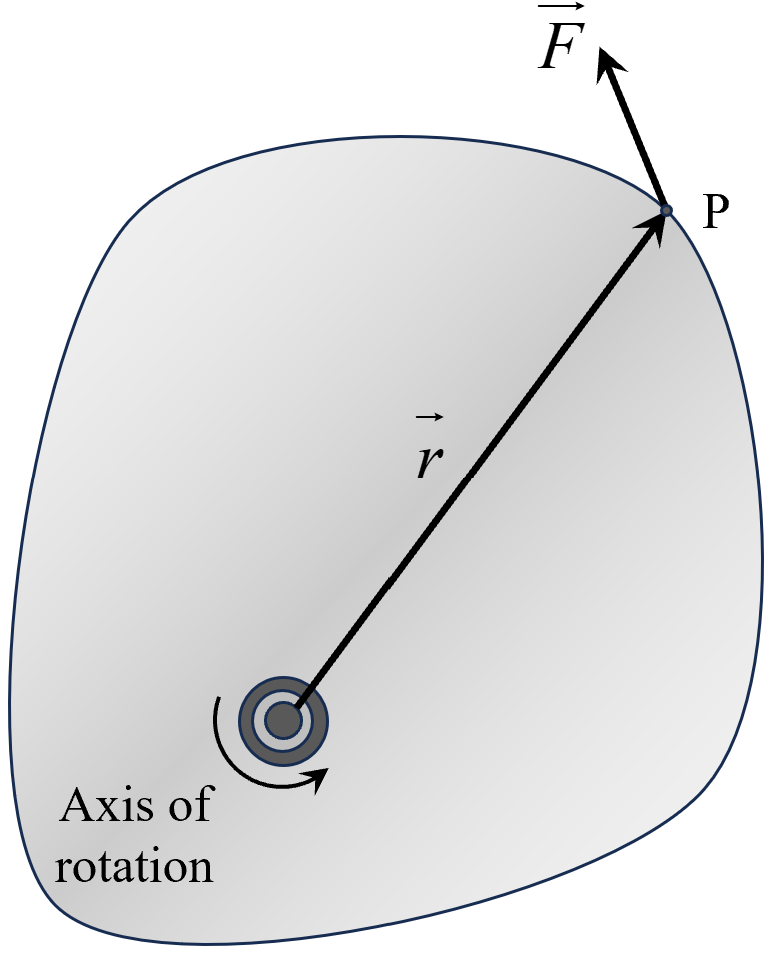
Diagram: Top view (plane
perpendicular to axis).
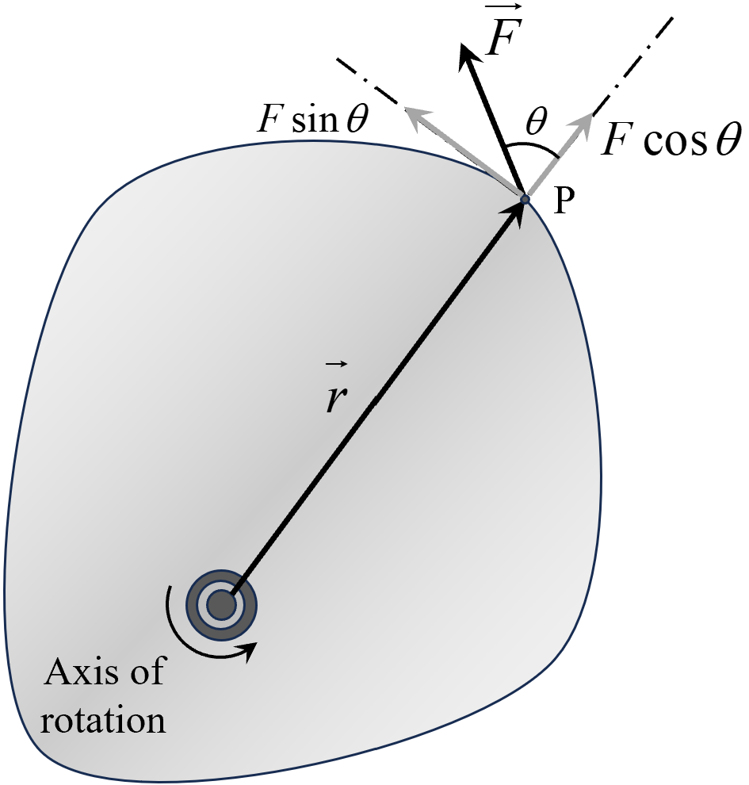
Diagram: Resolution of force along
and perpendicular to position vector.
The component of the force causing the turning effect is \( F\sin\theta \), where
\( \theta \) is the angle between the force vector \( \vec{F} \) and the
position vector \( \vec{r} \). The turning effect of the force increases with
the distance \( r \) from the axis of rotation. Therefore, the torque can be
expressed as:
\(\qquad \tau = r(F \sin\theta)\)
Considering that the direction of torque is perpendicular to the plane containing
\( \vec{r} \) and \( \vec{F} \), we can write the torque in vector form as:
\(\qquad \vec{\tau} = \vec{r} \times \vec{F}\)
Even if there is a non-zero component of the force along the axis of rotation, it
does not contribute to the torque around that axis because it does not cause any
turning effect. Therefore, \( \vec{\tau} = \vec{r} \times \vec{F} \) serves as a
general expression for torque.
Torque due to a force acting on a rigid body which is constrained to rotate about
a fixed axis can be calculated by following two methods:
Taking Force Component
When a force acts at a point \( P \) on a body in a plane perpendicular
to the axis of rotation, we calculate the torque by following these
steps:
Establish the position vector:
Identify the position vector
\(\vec{OP}\), ensuring that it
lies in a plane perpendicular to the axis of rotation.
Resolve the force into components:
Resolve the force into two components in
this plane: along and perpendicular to \(\vec{OP}\)
Select the perpendicular component:
Focus on the force component that is
perpendicular to
\(\vec{OP}\) as it contributes to the rotational effect.
This process is illustrated in the diagrams below:
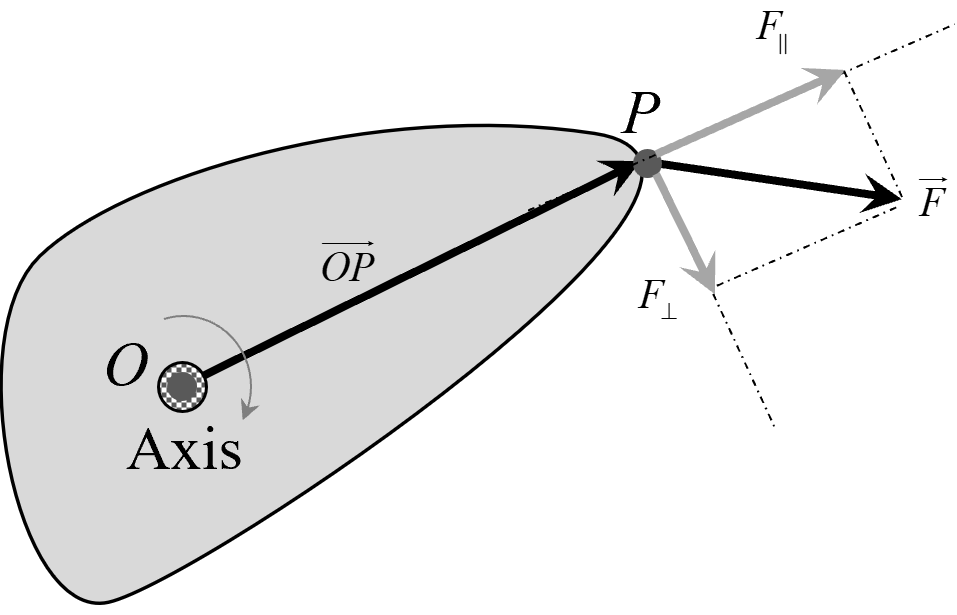
Diagram: Torque calculation
(The component of force parallel to the axis of rotation is
not shown).
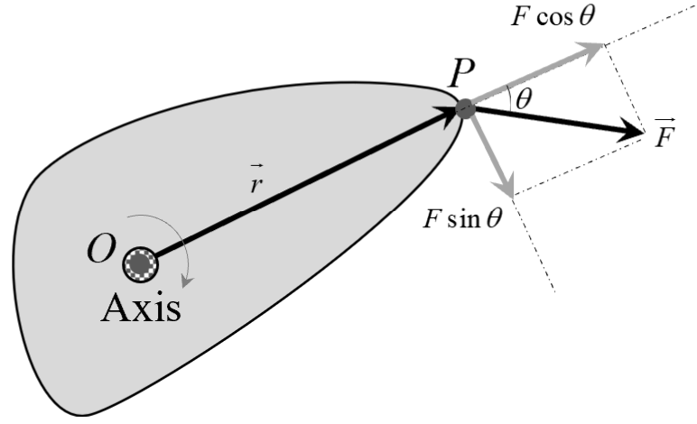
Diagram: Torque calculation
(The component of force parallel to the axis of rotation is
not shown).
We then select the component of the force that tends to rotate the body,
which is the component perpendicular to \(\vec{OP}\). The torque is
calculated using the formula:
\(\qquad \tau = \left(OP\right)F_{\perp}\)
This is simply another way of expressing \(\tau = r \left(F \sin
\theta\right)\), as demonstrated in the second diagram above.
Shortest Distance Method
To calculate torque using the shortest distance between the line of
action of the force and the axis of rotation, follow these steps:
Identify the point of application of force:
Locate the point where the force acts on
the body and
establish the line of action of the force.
Measure the perpendicular distance:
Find the shortest perpendicular
distance, \( d \), from the
axis of rotation to the line of action of the force. This is
referred to as the lever arm.
Calculate the torque:
Use the formula \( \tau = F d \), where
\( F \) is the
magnitude of the force and \( d \) is the perpendicular
distance (lever arm).
This method avoids resolving the force into components and directly uses
the shortest distance to calculate the torque. The process is
illustrated in the diagrams below.
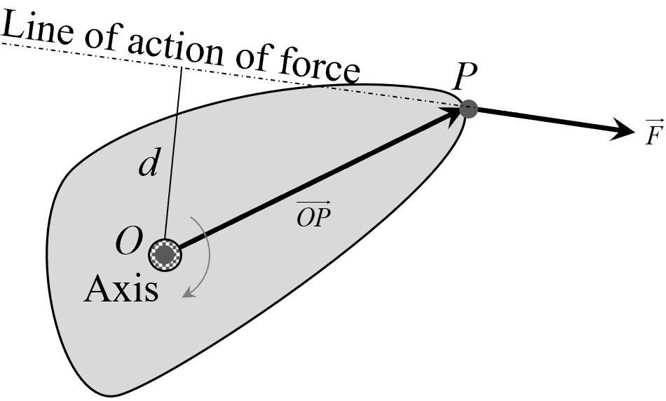
Diagram: Torque calculation
using the shortest distance (lever arm).
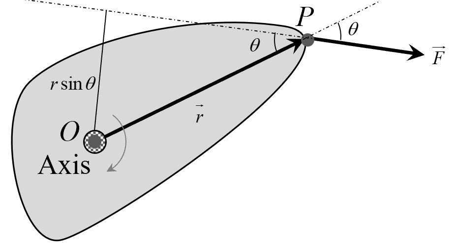
Diagram: Torque calculation
with perpendicular distance (lever arm).
The torque \( \tau \) is then calculated as:
\(\qquad \tau = F d\)
Where \( d \) is the perpendicular distance (lever arm) from the axis of
rotation to the line of action of the force.
The result is also the same as \(\tau = r \left(F \sin \theta\right)\)
since the perpendicular distance \( d = r \sin \theta \), as described
in the second diagram above.
Consider a rigid body free to rotate about a fixed point \( O \). When a force \(
\vec{F} \) is applied at a point \( P \) on the body, it can cause the body to
rotate. The torque \( \vec{\tau}_o \) about point \( O \) due to the force \(
\vec{F} \) is given by:
\(\qquad \vec{\tau}_o = \vec{r} \times \vec{F}\)
Here, \( \vec{r} \) is the position vector from point \( O \) to point \( P \),
where the force is applied. The torque vector \( \vec{\tau}_o \) is
perpendicular to the plane formed by \( \vec{r} \) and \( \vec{F} \), and its
direction is determined by the right-hand rule.
This concept is illustrated in the following diagram:
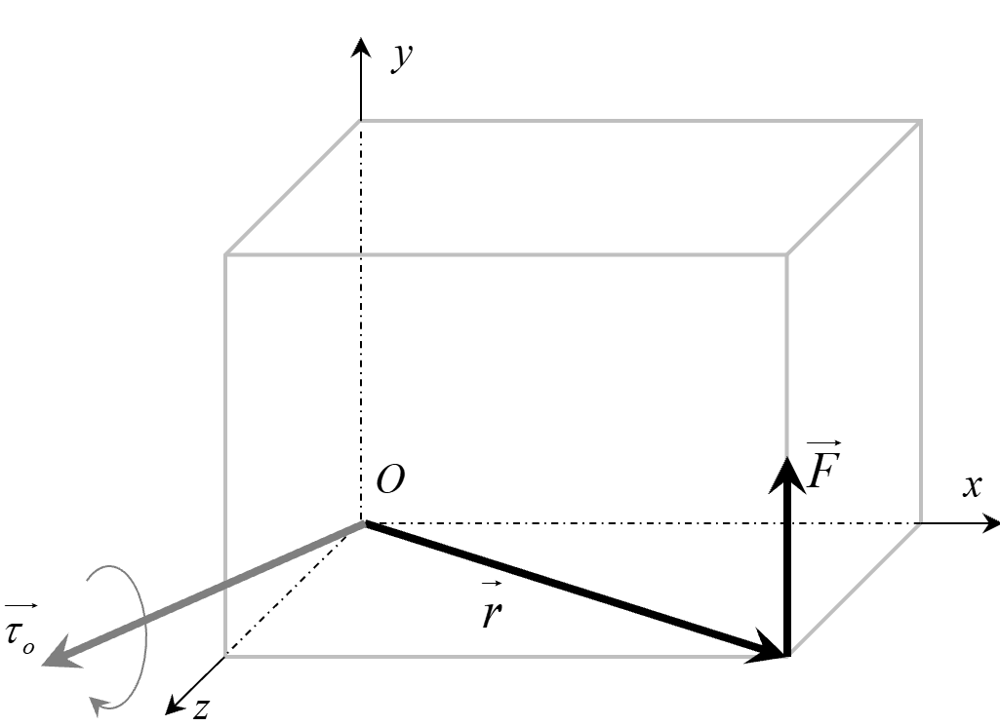
Diagram: Torque \( \vec{\tau}_o \)
about point \( O \).
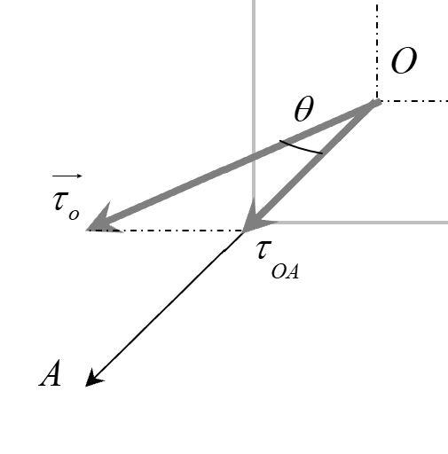
Diagram: Component of Torque \(
\vec{\tau}_o \) along axis \( OA \) (the z-axis)
If the body was initially at rest and free to rotate about point \( O \), the
torque \( \vec{\tau}_o \) will cause it to start rotating about an axis which is
in the direction of \( \vec{\tau}_o \).
However, if the body is constrained to rotate about a specific axis \( OA \)
passing through the point \( O \), only the component of the torque along that
axis contributes to the rotation. To find this component, we compute the
component of the torque vector \( \vec{\tau}_o \) onto that axis of rotation.
Let \( \theta \) be the angle between \( \vec{\tau}_o \) and the axis \( OA \).
The component of \( \vec{\tau}_o \) along this axis is given by:
The relationship between \(\tau_{\text{OA}}\) and \( \vec{\tau}_o \) is shown in
the above diagram. In summary, the torque of a force calculated about a point \(
O \) and calculated about an axis \( OA \) are different concepts and are
related as:
\(\qquad \text{Torque about axis } OA = \text{Component of torque about point } O
\text{ along line } OA\)
A rigid body is said to be in rotational equilibrium about an axis if the angular
velocity of the body remains constant about that axis. Even if the body is not
rotating at all, it is in rotational equilibrium since its angular velocity is
consistently zero.
When a body is in rotational equilibrium, the net turning effect of all forces
acting on the body must be zero; otherwise, the angular velocity of the body
will change. In other words, for a rigid body in rotational equilibrium, the
vector sum of all torques acting on the body should be zero. Hence,
For rotational equilibrium:
\(\qquad \sum \vec{\tau} = 0\)
Where \( \sum \vec{\tau} \) represents the vector sum of all torques acting on
the body about the axis of rotation.
For example, consider a balanced seesaw with two children of equal weight sitting
at equal distances from the pivot point, as shown:
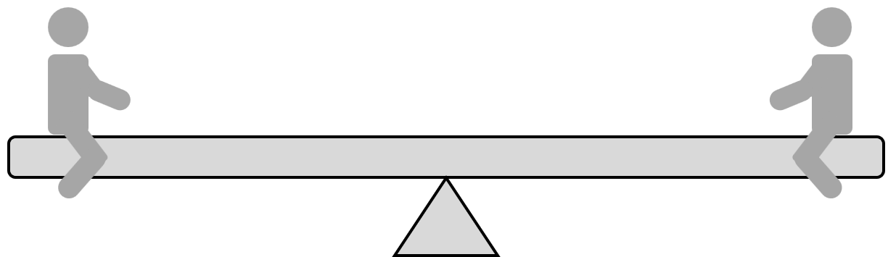
Diagram: Balanced state of see-saw.
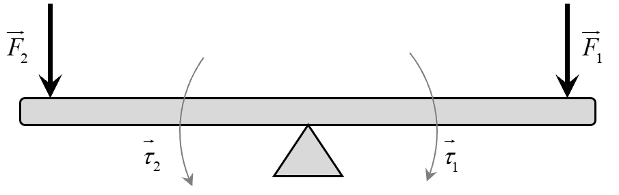
Diagram: Torques \(\vec{\tau_1}\) and
\(\vec{\tau_2}\) cancelling each other
The torque produced by the weight of
each child is equal in magnitude but opposite in direction, resulting in a net
torque of zero. This keeps the seesaw in rotational equilibrium, remaining
stationary.
When multiple forces act on a rigid body, they can be combined into a single
resultant force that produces the same external effect on the body as all the
original individual forces together. Not only is the magnitude and direction of
this resultant force important, but so is its line of action. The line of action
determines how the force will cause the body to translate and rotate.
The line of action of the resultant force is defined as the line along which, if
the resultant force acts, it generates the same total torque as the total torque
produced by the individual forces acting separately.
For Non-Parallel Forces:
When two forces, \( \vec{F}_1 \) and \( \vec{F}_2 \), act on a rigid body and
both pass through a common point \( P \), their resultant force \(
\vec{F}_{\text{net}} = \vec{F}_1 + \vec{F}_2 \) also passes through point \( P
\). This means the line of action of the resultant force is along the direction
of \( \vec{F}_{\text{net}} \) and passes through point \( P \). This is shown in
diagram below:
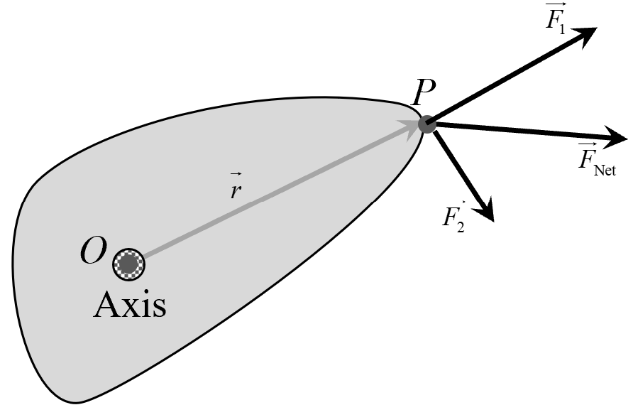
Diagram: The resultant of set of forces
passing point P.
To justify this, consider any arbitrary reference point \( O \). The net torque
about point \( O \) due to the forces is:
This shows that the net torque about point \( O \) is equivalent to the torque
produced by the resultant force \( \vec{F}_{\text{net}} \) acting at point \( P
\). Therefore, the line of action of the resultant force passes through point \(
P \), justifying that \( \vec{F}_{\text{net}} \) can be considered to act at \(
P \).
For Parallel Forces:
Consider a set of parallel forces \( \vec{F}_1,\,\vec{F}_2,\,\vec{F}_3,\,\ldots
\) acting on a rigid body, generating a total torque \( \vec{\tau}_{\text{net}}
\) about some reference point \( O \). The resultant force \(
\vec{F}_{\text{net}} \) is also parallel to these forces.
To find the line of action of \( \vec{F}_{\text{net}} \), we determine the point
\( P \) through which it must act to produce the same net torque about point \(
O \) as the individual forces. Let \( L \) be the perpendicular (shortest)
distance from point \( O \) to the line of action of \( \vec{F}_{\text{net}} \), as
shown in following diagram:
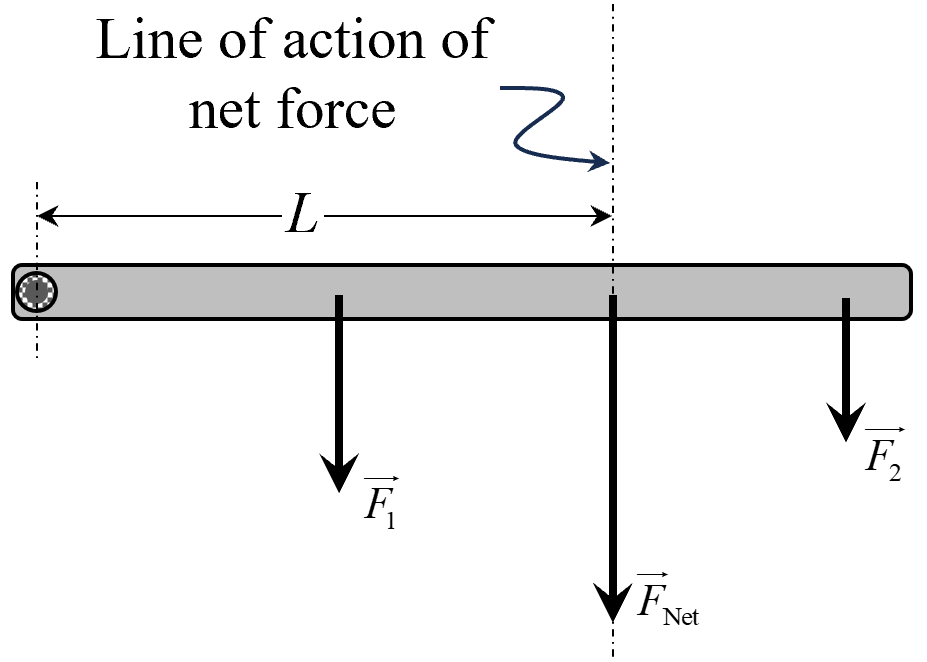
Diagram: Line of action of resultant of
parallel forces.
The torque due to \( \vec{F}_{\text{net}} \) about point \( O \) is:
Since \( \vec{F}_{\text{net}} \) is parallel to the original forces, and \(
\vec{OP} \) is perpendicular to \( \vec{F}_{\text{net}} \) (by definition of the
shortest distance), the magnitude of the torque is:
\(\qquad L = \frac{|\vec{\tau}_{\text{net}}|}{|\vec{F}_{\text{net}}|}\)
This equation allows us to find the perpendicular distance \( L \) from the
reference point \( O \) to the line of action of the resultant force \(
\vec{F}_{\text{net}} \). This ensures that \( \vec{F}_{\text{net}} \) acting at
point \( P \) will produce the same net torque about point \( O \) as the sum of
the torques due to the individual forces.
For example, let us try to understand why the action of weight on a body is always
shown from center of mass.
For a rigid body in a uniform gravitational field \( \vec{g} \), each
mass element \( m_i \) experiences a force \( \vec{F}_i = m_i \vec{g} \).
The total gravitational force is:
If \( \vec{r}_{\text{cm}} \) is the center of mass position given as:
\(\vec{r}_{\text{cm}} = \frac{1}{M} \sum_i m_i \vec{r}_i \), then the previous
result of total torque becomes:
Thus, we conclude that the net gravitational force \( \vec{F}_{\text{net}} = M
\vec{g} \) acts as if it is concentrated at the center of mass \(
\vec{r}_{\text{cm}} \). This means that the entire weight of the rigid body can be
represented as a single force applied at the center of mass, without changing the
overall effect on the body's motion or rotational behavior.
This is why, in diagrams or analyses of a body's motion, the weight is always shown
as acting from the center of mass — because the gravitational force produces the
same
torque and translation as if all the mass were concentrated at that point.
Toppling occurs when a body loses its equilibrium and rotates about
an edge or point, typically leading to its fall. The conditions for toppling are
determined by the torque generated by forces acting on the body and the position of
the line of action of these forces relative to the body's center of mass.
For toppling to occur, the line of action of a force must shift beyond the edge of
the body’s base of support, causing a net torque that rotates the object about this
edge. When this happens, the center of mass moves beyond the support base, and
gravity provides a torque that causes the body to tip over.
The primary factors that influence toppling are:
Center of Mass: The higher the center of mass, the more likely
toppling is to occur, since a smaller shift of the line of action is needed to
produce a toppling torque.
Base of Support: A wider base increases stability, as the line
of action has to shift further before causing toppling.
Torque: The magnitude of the torque applied by external forces,
such as gravity or an applied force, determines the likelihood and speed of
toppling.
An example is a box on an incline. As the incline angle increases, the center of mass
of the box moves closer to the edge of its base. When the line of action of the
weight force moves past the edge of the base, the box topples over.
In summary, toppling depends on the position of the line of action of the force
relative to the center of mass and the edge of the object’s base. If the center of
mass shifts too far, toppling occurs due to the net torque created by gravitational
force.
Previously, we established that the moment of inertia plays the role of
rotational inertia for a rigid body constrained to rotate about a fixed axis. In
the absence of an external torque, such a body maintains a constant angular
velocity.
In this section, we explore how torque influences the angular velocity of a
rigid body rotating about a fixed axis. For a rigid body constrained to rotate about
a
fixed axis, the net external torque is equal to the product of the moment of
inertia and the angular acceleration, all considered about the same axis of
rotation. This is demonstrated below:
Consider a rigid body rotating about a fixed axis with a non-uniform angular
velocity. Each particle within the body traces a circular path centered on the
axis of rotation. Let's focus on an infinitesimal mass element \( dm \) located
at a position vector \( \vec{r} \) from the axis. This particle has an
instantaneous angular velocity \( \omega \) and an angular acceleration \(
\alpha = \frac{d\omega}{dt} \).
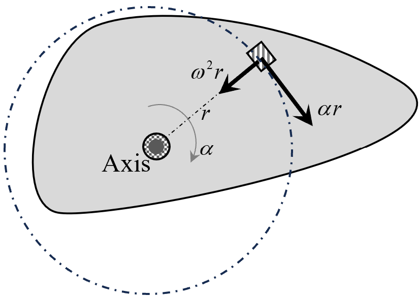
Diagram: Acceleration components of particles
of rigid body in rotation.
The particle's acceleration can be decomposed into two components:
This net tangential force on the particle comprises internal forces from other
particles within the body (\( d\vec{F}_{\text{internal}} \)) and external forces
acting on the particle (\( d\vec{F}_{\text{external}} \)):
This is because internal forces occur in action-reaction pairs that are equal in
magnitude and opposite in direction (Newton's third law), acting along the same
line. Therefore, their torques cancel each other out, resulting in zero net
torque from internal forces.
The left-hand side simplifies to the net external torque \( \vec{\tau} \):
Since \( \vec{r} \) is perpendicular to \( \vec{\alpha} \) (as \( \vec{\alpha}
\) is along the axis of rotation), the dot product \( \vec{r} \cdot \vec{\alpha}
= 0 \). Therefore:
The integral \( \int dm \cdot r^2 \) represents the moment of inertia \( I \) of
the body about the axis:
\(\qquad I = \int dm \cdot r^2 \)
Thus, we arrive at the fundamental relationship between torque and angular
acceleration:
\(\qquad \vec{\tau} = I \vec{\alpha} \)
This equation demonstrates that for a rigid body constrained to rotate about a
fixed axis, the net external torque is equal to the product of the moment of
inertia and the angular acceleration. This relationship is analogous to Newton's
second law for linear motion (\( F = ma \)), highlighting the parallel between
linear and rotational dynamics.
Rotational motion of a rigid body has many analogies to the straight-line
(translational) motion of particles. In both cases, there are physical quantities
that correspond to each other, such as displacement and angular displacement, force
and torque, and mass and moment of inertia. These analogies help us better
understand the equations governing rotational motion by relating them to the
familiar concepts of straight-line motion.
Quantity in Translational Motion
Analogous Quantity in Rotational Motion
Displacement (\( x \))
Angular Displacement (\( \theta \))
Velocity (\( v \))
Angular Velocity (\( \omega \))
Acceleration (\( a \))
Angular Acceleration (\( \alpha \))
Mass (\( m \))
Moment of Inertia (\( I \))
Force (\( F \))
Torque (\( \tau \))
Linear Momentum (\( p = mv \))
Angular Momentum (\( L = I\omega \))
Newton's Second Law (\( F = ma \))
Rotational Second Law (\( \tau = I \alpha \))
Kinetic Energy (\( \frac{1}{2} mv^2 \))
Rotational Kinetic Energy (\( \frac{1}{2} I \omega^2 \))